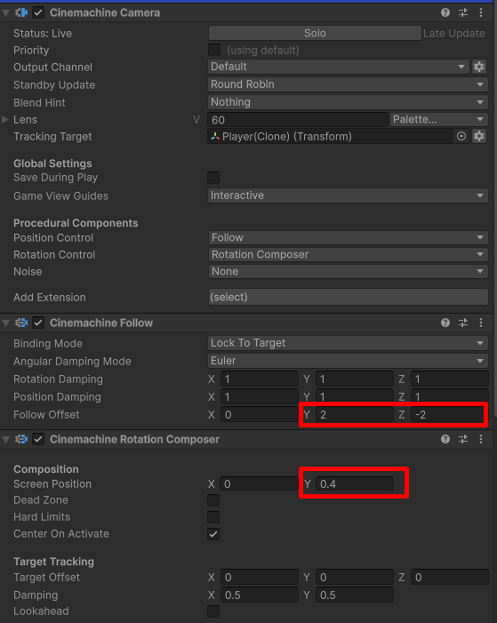
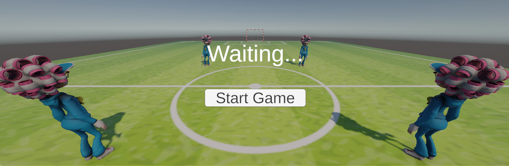

3.4 Estats del joc
En aquesta secció, crearem la lògica per gestionar els diferents estats del joc, com ara el menú principal, la pantalla de joc, etc. Utilitzarem una màquina d'estats per controlar les transicions entre aquests estats i assegurar-nos que el joc funcione de manera fluida.
GameStateManager
Dins de la escena GameScene, crearem un GameObject anomenat GameStateManager, dins de Managers que serà responsable de gestionar els diferents estats del joc. Aquest objecte tindrà una variable per emmagatzemar l'estat actual i mètodes per canviar d'estat.
En primer lloc creem l'script GameStateManager.cs i el vinculem al GameObject GameStateManager.
1 2 3 4 5 6 7 8 9 10 11 12 13 14 15 16 | |
Fem que el GameStateManager siga un singleton per assegurar-nos que només hi hagi una instància d'aquest objecte a la nostra escena. Això ens permetrà accedir al GameStateManager des de qualsevol altre script de manera senzilla.
Al fer que herete de NetworkBehaviour ens demanarà afegir el component NetworkObject al GameObject GameStateManager. Aquest component és necessari per a qualsevol objecte que vulguem sincronitzar a través de la xarxa.
A continuació afegim els estats del joc, amb un enum, i els mètodes per canviar d'estat:
1 2 3 4 5 6 7 8 9 10 11 12 13 14 15 16 17 18 19 20 21 22 23 | |
En aquest codi, hem definit un enum anomenat State que conté els diferents estats del joc: Menu, Waiting i Game. També hem creat una variable privada _gameState per emmagatzemar l'estat actual del joc.
En el mètode Start(), inicialitzem l'estat del joc a Menu, de manera que quan el joc comence, es mostrarà el menú principal.
El mètode SetGameState(State st) és el responsable de canviar l'estat del joc. Quan es canvia l'estat, s'invoca l'event OnGameStateChanged per notificar a tots els listeners que l'estat ha canviat. Això permet que altres scripts puguen reaccionar als canvis d'estat del joc de manera sincronitzada a través de la xarxa.
El següent pas serà subscriurens a l'esdeveniment OnGameStateChanged quan els clients es connecten al servidor:
1 2 3 4 5 6 7 8 9 10 11 12 13 14 15 16 17 18 19 20 21 22 23 24 25 | |
El mètode OnNetworkSpawn() s'executa quan el GameStateManager es crea a la xarxa. En aquest mètode, ens subscrivim a l'esdeveniment NetworkManager_OnServerStarted, que s'executa quan el servidor comença a funcionar. Quan el servidor comença, ens subscrivim a l'esdeveniment Singleton_OnClientConnectedCallback, que s'executa cada vegada que un client es connecta al servidor. En aquest esdeveniment, incrementem el nombre de jugadors connectats i, si el nombre de jugadors és igual o superior a 2, invoquem el mètode StartWaitingClientRpc():
1 2 3 4 5 6 7 8 9 | |
El mètode StartWaitingClientRpc() és un RPC que s'executa en tots els clients i en el host. En aquest mètode, canviem l'estat del joc a Waiting i invoquem l'event OnGameStateChanged per notificar a tots els listeners que l'estat ha canviat.
Per últim, hem de desuscriure'ns dels esdeveniments quan el GameStateManager es destrueix per evitar possibles errors:
1 2 3 4 5 6 7 | |
flowchart TD
A[Awake] --> B[Start]
B --> C[OnNetworkSpawn]
C --> D[NetworkManager_OnServerStarted *si és servidor*]
D --> E[Singleton_OnClientConnectedCallback]
E --> F[StartWaitingClientRpc]
F --> G[Estat = Waiting / OnGameStateChanged]
Waiting state
Ara anem a configurar el UIManager per a respondre als canvis d'estat del joc. En aquest cas, volem mostrar una pantalla de "Waiting..." quan l'estat del joc sigui Waiting i un botó per a començar el joc quan hi haja suficients jugadors connectats.
El text de Waiting ja el tenim al WaitingPanel, així que només ens falta afegir el botó de StartGame.
Ara, en l'script UIManager.cs, ens subscrivim a l'event OnGameStateChanged per mostrar o amagar els elements de la UI segons l'estat del joc:
1 2 3 4 5 6 7 8 9 10 11 12 13 14 15 16 17 18 19 20 21 | |
Observa com també ens desuscrivim de l'event OnGameStateChanged en el mètode OnDestroy() per evitar possibles errors quan el UIManager es destrueix.
A continuació, creem un callback per al botó StartGame que canviarà l'estat del joc a Game. Per a això hem de crear un nou mètode en el GameStateManager que canvie l'estat a Game i invoque a un nou RPC creat per a aquest propòsit:
1 2 3 4 5 6 7 8 9 10 11 12 13 14 15 16 | |
1 2 3 4 5 6 7 8 9 10 11 12 13 14 15 16 17 18 19 | |
Assigna el callback al StartButton i ja tindrem la lògica per canviar d'estat quan es prem el botó de començar el joc. Comprova que quan es prem el botó de començar el joc, es canvia l'estat a Game i desapareix la pantalla de Waiting.
El problema ara és que el botó de StartGame es pot prèmer inclós si només hi ha un jugador connectat, així que hem de desactivar el botó fins que hi haja suficients jugadors connectats. Per a això, hem de crear un nou esdeveniment que notifique el nombre de jugadors connectats i subscriure'ns a aquest esdeveniment per activar o desactivar el botó de començar el joc:
1 2 3 4 5 6 7 8 9 10 11 12 13 14 15 16 17 18 19 20 21 22 23 24 25 26 | |
També hem afegit el RPC UpdatePlayerCountClientRpc per sincronitzar el nombre de jugadors connectats a tots els clients. Quan un nou client es connecta, s'incrementa el nombre de jugadors i s'invoca aquest RPC per actualitzar el nombre de jugadors en tots els clients. A més, s'invoca l'event OnPlayerCountChanged per notificar a tots els listeners que el nombre de jugadors ha canviat.
1 2 3 4 5 6 7 8 9 10 11 12 13 14 15 16 17 18 19 20 21 22 23 | |
Ara, el botó de StartGame només estarà habilitat quan hi haja 2 o més jugadors connectats. Quan un nou jugador es connecta, el nombre de jugadors es sincronitza a tots els clients i el botó de començar el joc s'activa o desactiva segons el nombre de jugadors connectats. Prova amb més de 2 jugadors connectats i comprova que el botó de començar el joc s'activa correctament.
Configuració de la cámera
En aquest punt, el nostre joc ja té la lògica per gestionar els diferents estats del joc i sincronitzar el nombre de jugadors connectats a través de la xarxa. El següent pas serà configurar la càmera per a que segueixi al jugador local quan estem en l'estat de joc.
Usarem una càmera de tipus Follow Camera de Cinemachine, que ens permetrà seguir al jugador local de manera suau i amb una configuració més avançada que la càmera estàndard de Unity. Per a això, primer la hem d'importar des del Package Manager, "Cinemachine".
Elimina o desactiva la camera que té el prefab del player i crea una nova càmera de tipus Cinemachine > Targeted Cameras > Follow Camera. Aquesta càmera ens permetrà seguir al jugador local de manera suau i amb una configuració més avançada que la càmera estàndard de Unity.
Per a configurar la càmera de seguiment, hem de vincular-la al jugador local quan el joc comença. Però de moment la vinculem al prefab del player per a configurar alguns paràmetres. Una volta vinculada hem de canviar els següents paràmetres de la càmera:
- Follow Offset: Y 2, Z -2
- Screen Position: X 0, Y 0.4

Més endavant podem ajustar-los millor.
També hem d'afegir el component NetworkObject a la càmera de seguiment per a que es sincronitze a través de la xarxa.
Per a que la càmera seguisca al player quan apareix a la xarxa, crearem un nou script anomenat CameraController.cs i el vincularem a la càmera principal de la nostra escena. En aquest script, ens subscrivirem a l'esdeveniment OnGameStateChanged per activar o desactivar el seguiment de la càmera segons l'estat del joc:
1 2 3 4 5 6 7 8 9 10 11 12 13 14 15 16 17 18 19 20 21 22 23 24 25 26 27 28 29 30 31 32 33 34 35 36 37 38 39 40 41 42 43 44 45 46 47 48 49 | |
En aquest script, primer obtenim una referència a la càmera Cinemachine. També ens subscrivim a l'esdeveniment OnGameStateChanged en OnStart() i ens desuscrivim en OnDestroy() per evitar possibles errors quan el CameraController es destrueix. Ací, OnDestroy hem d'invocar-lo amb new perquè estem heretant de NetworkBehaviour i aquest té el seu propi OnDestroy() que hem de cridar amb base.OnDestroy().
El mètode GameStateManagerCallback s'executa cada vegada que l'estat del joc canvia. Quan l'estat del joc no és Menu, busquem el jugador local i configurem la càmera per seguir-lo (_camera.Target.TrackingTarget = _target;). Si el jugador local no es troba, mostrem un missatge d'advertència. En altres estats, desactivem el seguiment de la càmera.
Prova a iniciar el joc i comprova que la càmera segueix al jugador local quan el joc comença.
Spawn de jugadors
Per a fer el spawn dels jugadors quan es connecten a la xarxa, segurem els següents aassos:
- Establir el nombre màxim de jugadors en el
GamestateManager. De moment farem una constant de 4 MAX_PLAYERS = 4. - Establim 2 equips, team 1 i team 2.
- Afegim al
GamestateManagerun array serialitzat amb 4 transforms que seran els punts de spawn dels jugadors. - Quan el primer jugador es connecta, el posem en el team 1 i el fem spawnar en el primer punt de spawn, posició 0 de l'array. Quan el segon jugador es connecta, el posem en el team 2 i el fem spawnar en el segon punt de spawn. Quan el tercer jugador es connecta, el posem en el team 1 i el fem spawnar en el tercer punt de spawn. Quan el quart jugador es connecta, el posem en el team 2 i el fem spawnar en el quart punt de spawn.
- El NetworkManager es farà càrrec de fer el spawn dels jugadors en els punts de spawn corresponents segons el nombre de jugadors connectats i l'equip al que pertanyen.
Modifiquens el GameStateManager per a implementar aquesta lògica:
1 2 3 4 5 6 7 8 9 10 11 12 13 14 15 16 17 18 19 20 21 22 23 24 25 26 27 28 29 30 31 | |
Després de crear la constant MAX_PLAYERS i l'array de spawnPoints, modifiquem el mètode Singleton_OnClientConnectedCallback per assignar un equip i un punt de spawn al nou jugador que es connecta. El jugador es fa spawnar en el punt de spawn corresponent segons el seu índex basat en el clientId. També cridem un RPC per informar al client del seu equip i punt de spawn.
La crida al RPC AssignTeamAndSpawnClientRpc s'ha de fer amb RpcTarget.Single(clientId) per assegurar-nos que només s'envia al client que s'ha connectat. Així, cada jugador rebrà la informació del seu equip i punt de spawn de manera individual. El segon paràmetre RpcTargetUse.Temp és necessari per a especificar que aquest RPC s'ha d'enviar només al client que s'ha connectat, ja que el clientId és un identificador temporal que només existeix en el moment de la connexió.
El codi del Rpc AssignTeamAndSpawnClientRpc seria el següent:
1 2 3 4 5 6 7 8 9 10 11 12 13 14 15 16 | |
En aquest RPC, el client rep la informació del seu equip i punt de spawn assignats. Posicionem el jugador local en el punt de spawn assignat, però es pot ampliar aquesta lògica per configurar altres aspectes del jugador segons l'equip (per exemple, color, habilitats, etc.).
Acó no estem usant el paràmetre rpcParams, però el necessitem per a especificar que aquest RPC s'ha d'enviar només al client que s'ha connectat (RpcTarget.Single(clientId)).
Crea un Empty GameObject a la nostra escena i anomena'l SpawnPoints. Dins d'aquest GameObject, crea 4 Empty GameObjects que seran els punts de spawn dels jugadors. Col·loca aquests punts de spawn en diferents posicions del mapa i assigna'ls a l'array spawnPoints del GameStateManager en l'ordre que vulgues que els jugadors facen spawn.
Comprova que ara podem connectar fins a 4 jugadors i que cada jugador fa spawn en el punt de spawn corresponent segons el seu equip.

Per últim, falta la lògica per a permetre només el màxim de jugadors connectats.
Primer, exportem la constant MAX_PLAYERS per a que es puga llegir des d'altres scripts:
1 2 3 4 5 6 | |
Després, en l'script UIManager.cs, modifiquem el mètode PlayerCountChangedCallback per desactivar el botó de començar el joc quan s'arriba al nombre màxim de jugadors connectats. També canviem el missatge de "Waiting..." per a mostrar el nombre de jugadors connectats i aununciar que s'ha arribat al màxim de jugadors:
1 2 3 4 5 6 7 8 9 10 11 12 13 14 15 16 17 18 19 20 21 22 | |